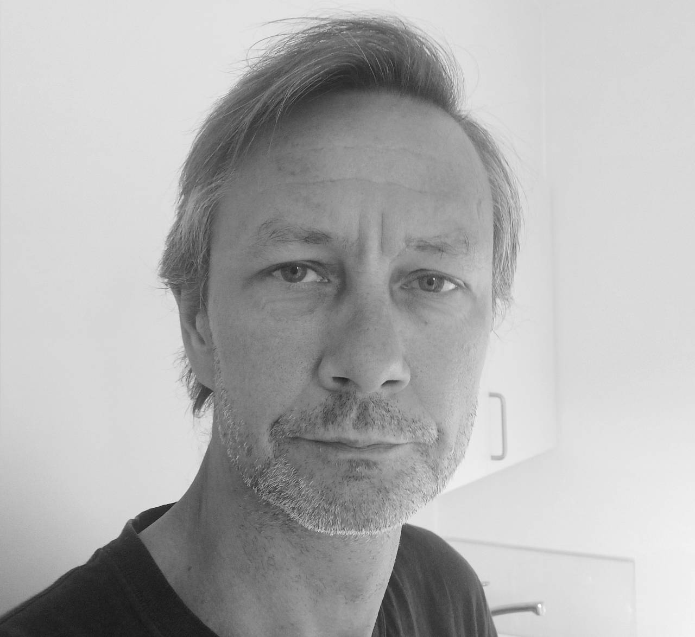

Hvem er jeg
Mit navn er Jakob Bundgaard.
Jeg er Datamatiker og tidligere kok, med mere end 20 års erfaring fra restaurationsbranchen.
For nogle år siden var jeg kørt lidt sur i kokkefaget og havde lyst til at prøve noget andet.
Jeg har altid været fascineret af computere og hvad de kan, fra at sende raketter til månen til computerspil, så jeg besluttede mig for at blive softwareudvikler.
Jeg blev færdig som Datamatiker i 2022, men følte jeg manglede en del på Frontenden, så jeg er nu i gang med en
top-up i Web-udvilkling på Erhversakademi Aarhus.
I min fritid spiller jeg guitar, prøver at komme ud at klatre et par gange om ugen og spiller computer.

Projekter

Kontakt
jakobbundgaard@hotmail.com
+45 60 929 329